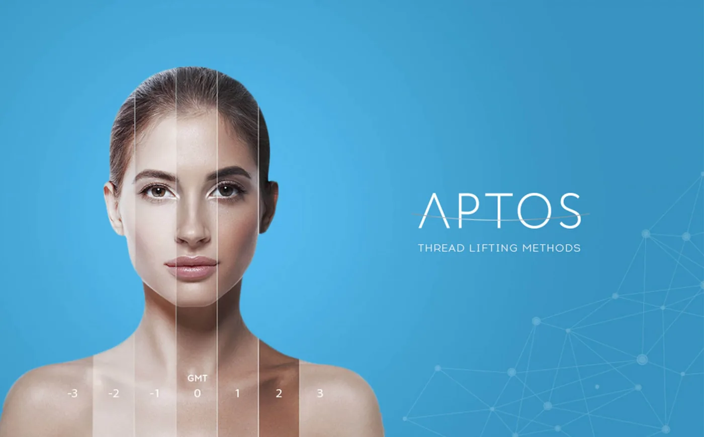

Thread lifting helps target any visible lines and wrinkles.
Lifting the face, using thread? Is it ACTUALLY safe?
Don’t worry, you’re not the only one who came in here with that question. In fact, I have had many patients coming into my clinic with the same concern. I totally get it. Most of you are probably looking for an instant, yet safe solution to combat wrinkles, and I can say thread lifting does sound a bit jarring. Yet, the results are so promising! That is the dilemma.
Well, I can confidently say that thread lifting is absolutely safe! But, the real question is, is thread lifting the right treatment for you? Well, let me walk you through the basics of thread lifting and what are the things you should know about before asking one from your doctor. Let’s go, gorg!
Why Choose Thread Lifting?
First of all, let’s understand what thread lifting is. Thread lifting, as its name suggests, is a minimally invasive medical aesthetic procedure that gives a lifting effect to the facial tissue using biodegradable medical-grade skin sutures (not the typical sewing threads, ok). Typically, this treatment is recommended to patients who want to firm, lift and rejuvenate their complexion without having to risk their healths going under the knife.
It is categorized as minimally invasive as it can be done in a clinic setting, have much lesser downtime, and results are definitely more natural and subtler compared to a surgical facelift. Hence, it is an absolute anti-aging treatment for everyone who wants to rewind their aging clock by a few years, or I would like to call it ‘age maintenance treatment’.
Who is Suitable for Thread Lifting?
Anyone with early-onset skin laxity, loss of firmness, saggy skin, and other skin ‘aging’ issues. So, if you are thinking of getting improvement of facial folds, facial recontouring, and a slimmer face, you can definitely opt for thread lifting.
Aside from skin aging and sagging, thread lifting can also be great for anyone looking for recontouring and slimmer face.
Honest Answer; is Thread Lifting ACTUALLY Safe?
Well, I am a licensed and certified Aesthetic Doctor after all. So, it is always my duty and responsibility to inform my patients and future clients of the right information with 100% clarity and truth. So, to answer this question, YES, it is a safe procedure as long as:
ONE, the physician is a qualified aesthetic doctor, with extensive experience in performing thread lifting. I typically suggest patients do background checks of the physician and his or her achievements and certifications.
TWO, the procedure is done in a sterile environment using sterile equipment and sterile methods (aseptic technique).
What to Expect After Getting a Thread Lift?
Results of thread lifting procedures can be quite prominent but will be more subtle over a period of time. This is because there isn’t any removal of skin involved. In other words, you are not going under the knife.
No one can stop the skin from biological aging. Every human being goes through skin aging which involves depletion of skin collagen and elastin. Hence, the skin will eventually (and naturally) grow to be laxed and saggy.
But depending on the method advocated, for example for APTOS Thread Lift, a few methods can be applied during one sitting, hence resulting in a more dramatic change. This most likely benefits you in the long run as the lifting effect will last much longer and much subtle as time goes by. In short, you’ll probably maintain to look like in your early 20’s much longer.

the APTOS Thread Lifting is USFDA approved and safe when it is done by an expert.
My Recommendation, the APTOS Thread Lifting!
Yes, there are many types of thread lifting treatments over the years, and so many brands are pumping out their own ‘unique’ thread products. Some are reputable, some are… not so much. But bear in mind, type of threads is one thing, most importantly is the skill and reliability of the physician.
I am an APTOS-certified physician to perform APTOS Thread lift procedures. The reason why I advocate APTOS over others to my patients is that APTOS threads are USFDA approved premium threads. The brand is very established and the threads are of good quality. They have been around in the industry since 2007 and have made multiple formidable quality threads using the latest methods for maximum results and patient satisfaction.
APTOS threads are made of PLLA + CL (polylactic acid + caprolactone) and their latest invention (aka my favorite) is the APTOS Visage Excellence with Hyaluronic Acid! This ‘magical’ thread not only lifts but the hyaluronic acid coatings rejuvenate, and give extra moisture and hydration to the skin. My patients love each time they see the result!
What’ve My Patients Been Saying About APTOS Thread Lift?
Face appears younger, fresher, more lifted (in a natural-looking way), and definitely looked like they turned back time to their early 20’s. Most of them told me that people around them realized something is different about their appearance, yet no one can tell what it was! That’s how subtle APTOS Thread Lift lifts the skin. They looked like they just drank magic potion straight from the Fountain of Youth, hehe…
Plus, they get comments that they look great and maintained! Like they just come back from a well-rested holiday 🙂
Interested to Learn More About APTOS Thread Lift?
Contact me today and book an appointment with me. I’ll be more than happy to help you learn more about this treatment face to face. Like I always say, your beauty and confidence are my duty. So, if you need a little confidence boost, I am your go-to aesthetic doctor.
See you! Dr. Abby